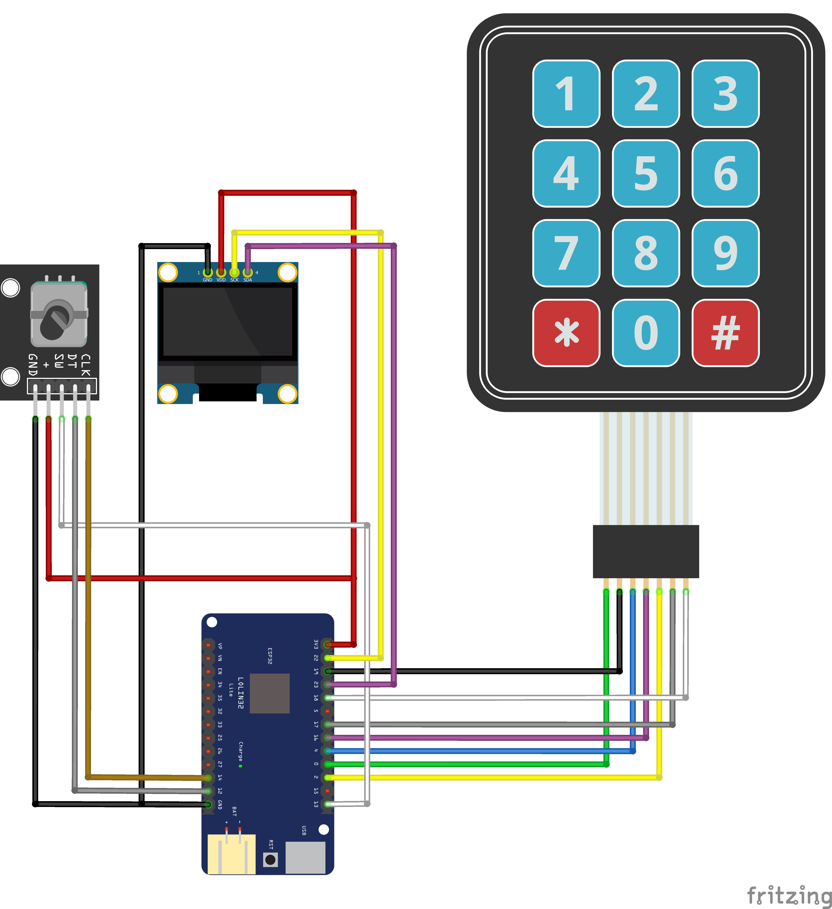
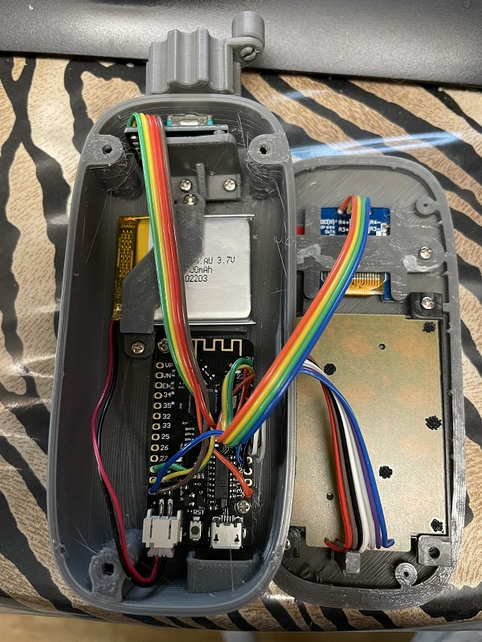

WiTcontroller (Physical)

From Engine Driver’s very own Peter Akers (flash62au on our Discord server), comes a physical hardware throttle using only 4 parts:
ESP32 with LiPo charger
rotary encoder
3x4 keyboard
OLED Display
Files for a 3D printed case are also available.
For a video on how to do this, click below:
Features
provides a list of discovered SSIDs with the ability to choose one. When you select one:
if it is one in your specified list, it will use that specified password
if it is a EX‑CommandStation in Access Point mode, it will guess the password
otherwise it will only connect if the password is blank
Optionally provides a list of SSIDs with the specified passwords (in the sketch) to choose from
Auto-connects to the first found wiThrottle Server if only one found, otherwise:
asks which to connect to
if none found will ask to enter the IP Address and Port
Guesses the wiThrottle Server IP address and Port for EX-CommandStation WiFi Access Point mode Command Stations
Rudimentary on-the-fly consists
Assign commands directly to the 1-9 buttons (in the sketch)
Command menu including:
Able to select and deselect locos
by their DCC address, via the keypad
from the first 50 locos in the roster
Able to throw/close turnouts/points
Able to activate routes
set/unset a multiplier for the rotary encoder
Power Track On/Off
Disconnect / Reconnect
Put ESP32 in deep sleep and restart it
limited dealing with unexpected disconnects. It will thow you back to the WiThtottle Server selection screen.
NOTE: This is a Project and is therefore a work in progress and open source. New features are being added regularly and a full tutorial will be available soon in the projects section.
Source code and instructions can be found on GitHub here: https://github.com/flash62au/WiTcontroller
Images
Here is a connection diagram drawn in Frizing showing how to wire the parts together:
{kind=link}
Here are pictures showing parts placement inside the case:
{kind=link}
{kind=link}